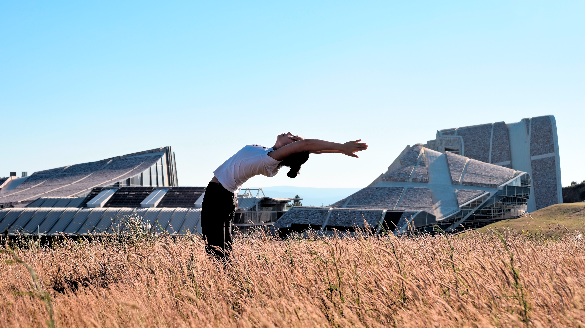
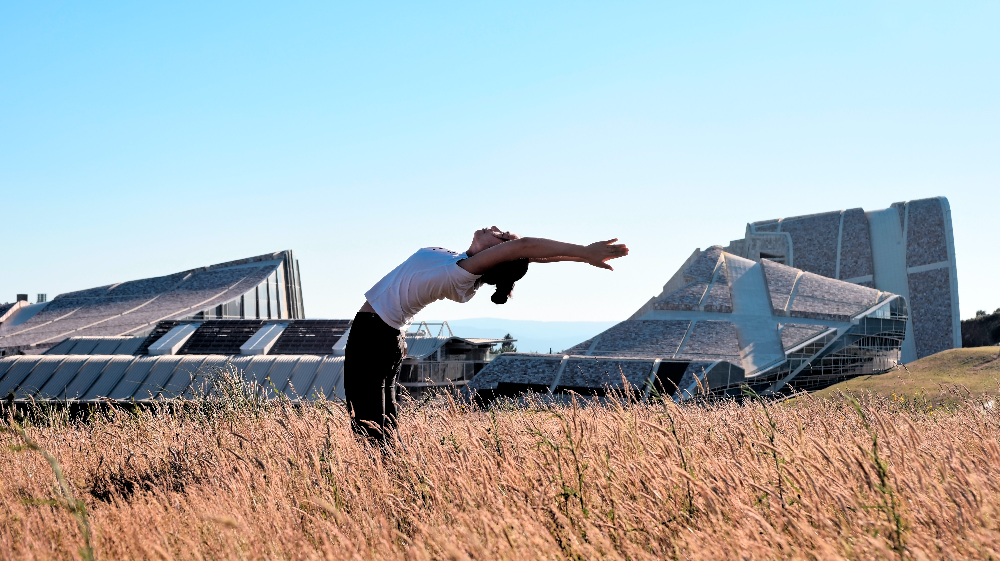

According to some studies, regular exercise works
as well as medication for some people to reduce
symptoms of anxiety and depression,
and the
effects can be long lasting.
One vigorous
exercise session
can help alleviate symptoms for hours, and a
regular
schedule may significantly reduce them over
time.
Develop a routine so that you're physically active most days of
the week.
Exercise is a powerful stress reducer.
It can improve your mood and help you stay healthy.
Start out slowly, and gradually increase the amount and
intensity of your activities.
DKeeping track of your personal life can help you and your mental health provider identify what's causing you stress and what seems to help you feel better.
A healthy diet that incorporates vegetables, fruits, whole grains and fish may be linked to reduced anxiety, but more research is needed.
Visualization techniques, meditation and yoga are examples of relaxation techniques that can ease anxiety.
Do what you can to make sure you're getting enough sleep to feel rested. If you aren't sleeping well, talk with your health care provider.

When you’re feeling anxious, you might notice that your heart rate and breathing get a bit faster. You may also begin to sweat and feel dizzy or lightheaded. When you’re anxious, getting your breathing under control can relax both your body and mind.
To get your breathing under control when you’re anxious, follow these steps:
1.Sit in a quiet and comfortable place. Put one of your hands on your chest and the other on your stomach. Your stomach should move more than your chest when you breathe in deeply.
2.Take a slow and regular breath in through your nose. Watch and sense your hands as you breathe in. The hand on your chest should remain still while the hand on your stomach will move slightly.
3.Breathe out through your mouth slowly.
4.Repeat this process at least 10 times or until you begin to feel your anxiety lessen.
Have you ever heard the “finding your happy place” expression? Painting a mental picture of a place that makes you feel relaxed can actually calm your brain and body.
When you start to feel anxious, sit in a quiet and comfortable place. Think of your ideal place to relax. While it can be any place in the world, real or imaginary, it should be an image that you find very calming, happy, peaceful, and safe. Make sure it’s easy enough to think about so you can return to it in your mind when you feel anxious in the future.
Think of all the small details you’d find if you were there. Think about how the place would smell, feel, and sound. Envision yourself in that place, enjoying it comfortably.
Once you have a good picture of your “happy place,” close your eyes and take slow and regular breaths through your nose and out of your mouth. Be aware of your breathing and continue focusing on the place you’ve imagined in your mind until you feel your anxiety lifting. Visit this place in your mind whenever you feel anxious.
When you feel anxious, you might notice strain or tension in your muscles. This muscle stress can make your anxiety more difficult to manage in the moment you’re experiencing it. By relieving the stress in your muscles, you can usually reduce your anxiety levels.
To quickly relieve your muscle tension during moments of anxiety
1.Sit in a quiet and comfortable place. Close your eyes and focus on your breathing. Breathe slowly into your nose and out of your mouth.
2.Use your hand to make a tight fist. Squeeze your fist tightly.
3.Hold your squeezed fist for a few seconds. Notice all the tension you feel in your hand.
4.Slowly open your fingers and be aware of how you feel. You may notice a feeling of tension leaving your hand. Eventually, your hand will feel lighter and more relaxed.
5.Continue tensing and then releasing various muscle groups in your body, from your hands, legs, shoulders, or feet. You may want to work your way up and down your body tensing various muscle groups. Avoid tensing the muscles in any area of your body where you’re injured or in pain, as that may further aggravate your injury.
Counting is a simple way to ease your anxiety. When you feel anxiety washing over you, find a quiet and comfortable place to sit. Close your eyes and slowly count to 10. If necessary, repeat and count to 20 or an even higher number. Keep counting until you feel your anxiety subsiding.
Sometimes this relief occurs quickly, but other times it might take a while. Stay calm and patient. Counting can relax you because it gives you something to focus on besides your anxiety. It’s a great tool to use in a crowded or busy space like a store or train where other anxiety exercises might be more challenging to carry out.
Mindfulness is the practice of being present in your current state and surroundings, gently and without judgment. Staying present can help you create a calm state of mind when you feel your thoughts racing and anxiety building.
To bring yourself outside your thoughts into the present:
1.Find a quiet and comfortable place to sit and close your eyes.
2.Notice how your breathing and body feel.
3.Now shift your awareness to the sensations you observe in your surroundings. Ask yourself What’s happening outside of my body? Notice what you hear, smell, and feel in your environment.
4.Change your awareness several times from your body to your environment and back again until your anxiety starts to fade.
It can be hard to think clearly when you feel anxious. Sometimes anxious thinking can make us believe harmful thoughts that are untrue or make us do things that make our anxiety worse. It can be helpful to break or interrupt your anxious thoughts so you can think clearly and react appropriately to your thoughts.
Here’s how to break your anxious thought cycle:
1.Ask yourself whether endless worry is a problem for you. If the answer is yes, it’s good to be aware of that.
2.Try different ways of interrupting your anxious thought process, such as:
3.Singing a silly song about your anxiety to an upbeat tempo, or speaking your anxieties in a funny voice.
4.Choose a nice thought to focus on instead of your anxiety. This could be a person you love, your happy place, or even something you look forward to doing later that day, such as eating a nice dinner.
5.Listen to Quran or read Quran.